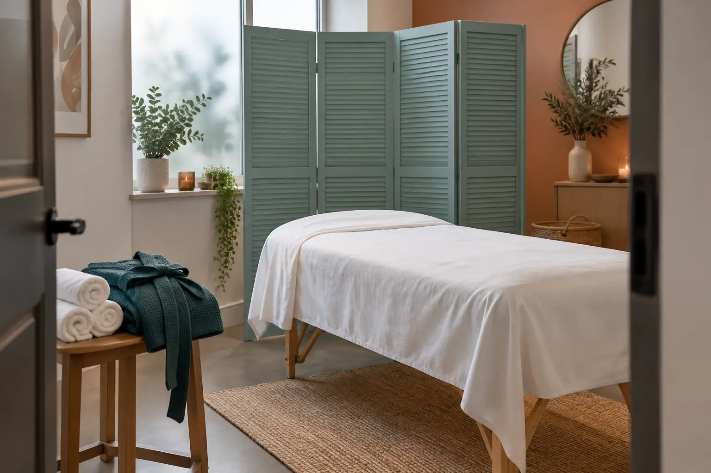

Bikinio depiliacijos pavadinimai: klasikinė, gili ir braziliška
Autorius: Madbeauty redakcija · 2026 m. gruodžio 30 d. 16:00 Lietuvos laiku
Sužinokite, ką gali reikšti bikinio zonos pavadinimai ir ką patikrinti apie depiliacijos metodą, apimtį bei privatumą prieš vizitą.

Vien pavadinimas „klasikinė“, „gili“ ar „braziliška“ depiliacija nepatvirtina tikslios zonos ribos. Prieš rinkdamiesi paslaugą patikrinkite konkretaus teikėjo aprašą: kuri vieta įtraukiama, ar paliekamas plaukų plotas ir ar naudojamas vaškas, ar cukraus pasta.
Pavadinimas ir zonos riba
Pavadinimai gali padėti atskirti pasiūlymus, bet tikslų jų turinį nusako teikėjo meniu. Pavyzdžiui, viename perskaitytame meniu „higieninis“ bikini apibrėžiamas kaip sritis už kelnaičių krašto, o „visas bikini“ – kaip platesnė apimtis. Prie viso bikinio taip pat nurodoma galimybė palikti plaukų plotą. Tai konkretaus teikėjo terminai, o ne visiems salonams galiojanti taisyklė.
Šis meniu abu zonos apimties variantus pateikia ir depiliacijai vašku, ir cukraus pasta. Taigi metodą ir zonos ribą verta vertinti atskirai. Pavyzdį galima patikrinti DEPEXA bikinio zonų ir metodų meniu.
Atskirkite metodą, zoną ir paslaugos apimtį
- Metodas: patikrinkite, ar pasiūlyme nurodytas vaškas, ar cukraus pasta. Vien šis pasirinkimas nepasako, kokia kūno vieta įtraukiama.
- Zonos riba: išsiaiškinkite, kurios vietos įtraukiamos ir ar paliekamas plaukų plotas. Jei pasiūlymas vadinamas „brazilišku“ ar „giliu“, paprašykite teikėjo paaiškinti, ką šis pavadinimas reiškia jo meniu.
- Paslaugos apimtis: patikrinkite, kokie darbai įtraukti į pasirinktą pasiūlymą ir ar yra atskirai nurodytų papildomų darbų. Kainą bei trukmę patvirtinkite pagal aktualų teikėjo pasiūlymą.
Palyginimo pavyzdys
Iliustracinė situacija: viename pasiūlyme aprašyta sritis už kelnaičių krašto, kitame – platesnė zona, kurioje gali būti paliekamas plaukų plotas. Tai nėra dviejų konkrečių salonų palyginimas. Prieš rinkdamiesi paprašykite patvirtinti tikslią ribą, o ne spręskite vien iš žodžio „bikini“ ar „braziliška“.
Privatumas ir bendravimas prieš vizitą
Prieš sutikdami su paslaugos apimtimi, galite aptarti, kaip bus paaiškinami veiksmai, kaip suderinamos zonos ribos ir kaip paprašyti padaryti pertrauką ar sustoti. Taip pat iš anksto pasiteiraukite, kaip pasirūpinama privatumu, kokia apranga reikalinga ir kas bus kabinete. Tai klausimai teikėjui, o ne prielaidos apie konkretaus salono tvarką.
Ką patvirtinti prieš registruojantis?
- Kokia tiksli zonos riba ir kurios vietos įtraukiamos?
- Ar kas nors paliekama, o jei taip – kokios formos?
- Ar naudojamas vaškas, ar cukraus pasta?
- Kas įeina į pasirinktą pasiūlymą, kokia jo kaina ir trukmė?
- Kaip aptariamas privatumas ir kaip vizito metu galima paprašyti pertraukos?
Madbeauty nacionaliniame kataloge rasite bikinio depiliaciją vašku ir bikinio depiliaciją cukrumi. Pasirinkite miestą atskirai ir patikrinkite, ar jame yra reali pasiūla; nacionalinis kategorijos aprašas nepatvirtina konkretaus teikėjo ar registracijos galimybės.
Jei dar lyginate vašką ir cukraus pastą, depiliacijos gide aptariami platesni metodo pasirinkimo ir vizito eigos klausimai.
Susiję gidai
Šaltiniai
- DEPEXA · bikinio zonų ir metodų meniu · depexa.lt